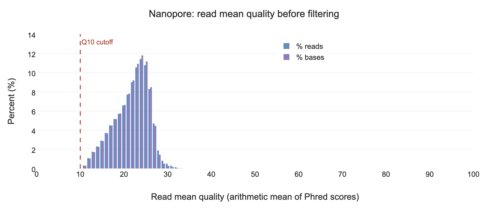
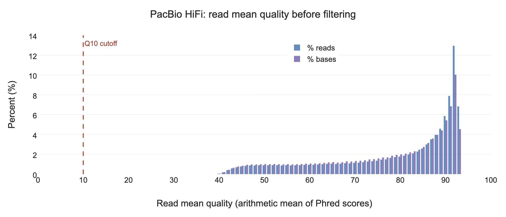
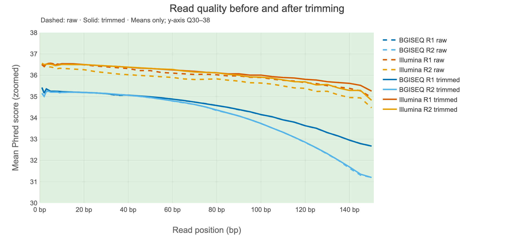
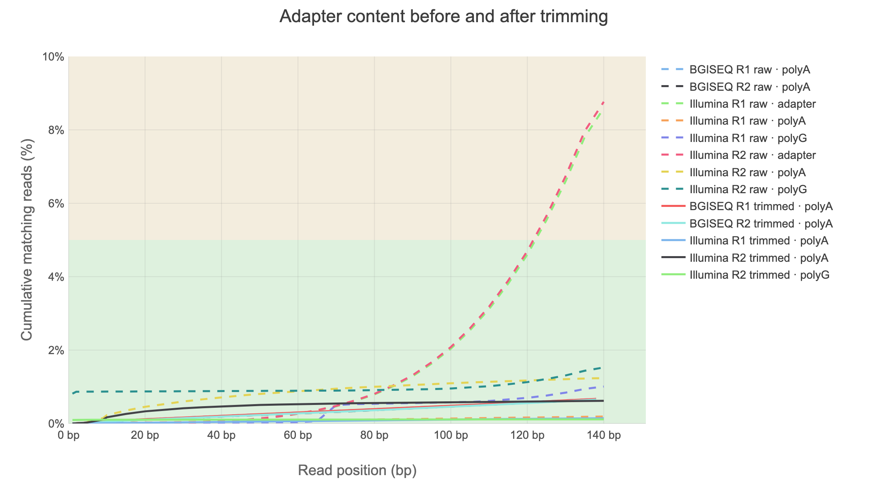

Week 2, Session 2
Trimming, Filtering, and Reading QC Across Samples
On Tuesday you measured four platforms. Today you act on what you found: trim the short reads, clean and filter the long reads, and compare short-read QC reports before and after trimming. Focus on what changed and whether preprocessing improved the reads.
Before You Start
srun --partition=batch --nodes=1 --ntasks=1 --cpus-per-task=4 \
--mem=16G --time=03:00:00 --pty bash
hostname
export COURSE=/cluster/tufts/c27sp1bio0196
export MYWORK=$COURSE/$USER
export READS=$MYWORK/week-01/session-02/fetch/results/fastq
mkdir -p "$MYWORK/week-02/session-02"
cd "$MYWORK/week-02/session-02"
ls -lh "$READS"Use the original downloaded FASTQ files, as in Session 1. If $READS is empty, finish the Week 1 download or use the staged FASTQ files:
export READS=$COURSE/shared/wk2/fallback_fastq
ls -lh "$READS"module load seqkit fastp fastplong fastqc multiqc
module list
fastplong --versionDefine the six input files again in this session, using your current $READS directory:
ILLUMINA_R1="$READS/SRX23612877_SRR27956204_1.fastq.gz"
ILLUMINA_R2="$READS/SRX23612877_SRR27956204_2.fastq.gz"
BGISEQ_R1="$READS/SRX13548510_SRR17374239_1.fastq.gz"
BGISEQ_R2="$READS/SRX13548510_SRR17374239_2.fastq.gz"
PB="$READS/SRX14356846_SRR18210286.fastq.gz"
LONG="$READS/SRX13548509_SRR17374240.fastq.gz"
ls -lh "$ILLUMINA_R1" "$ILLUMINA_R2" "$BGISEQ_R1" "$BGISEQ_R2" "$PB" "$LONG"All six files should exist before you continue. If your filenames differ, update the filenames on the right while keeping the variable names on the left.
Part 1: Trim the Short Reads
1.1 Run fastp on One Sample
mkdir -p trimmed reports
S=illumina
echo "working on $S"
fastp \
--in1 "$ILLUMINA_R1" \
--in2 "$ILLUMINA_R2" \
--out1 "trimmed/${S}_1.trim.fq.gz" \
--out2 "trimmed/${S}_2.trim.fq.gz" \
--detect_adapter_for_pe \
--json "reports/${S}.fastp.json" \
--html "reports/${S}.fastp.html" \
--thread 4Extra adapter detection for paired-end reads
Paired-end (PE) sequencing reads a DNA fragment from both ends. Adapters are artificial sequences used during library preparation. If the biological insert is shorter than a read, sequencing can continue into an adapter. For example:
150-base read = 120 bases of biological insert + 30 bases of adapterAdapter trimming and adapter auto-detection are different:
- Without this flag: fastp still trims paired-end adapters by finding where R1 and R2 overlap. Adapter trimming is enabled by default.
- With this flag: fastp also infers adapter sequences from input. This can trim adapters when a reliable overlap cannot be found, for example because of sequencing errors. This extra detection step is off by default for paired-end input.
We enable it here to supplement overlap-based trimming; it may remove some additional adapter sequence and take slightly longer. It does not merge R1 and R2 or trim every read to a fixed length. See the fastp adapter documentation.
Open reports/illumina.fastp.html to inspect adapter trimming and QC before and after processing. Later, rerun FastQC on both trimmed mates to check for remaining adapters. Verify the output: enabling detection does not guarantee complete adapter removal.
1.2 How Much Survived
python3 -c "
import json, glob
d = json.load(open(sorted(glob.glob('reports/*.fastp.json'))[0]))
b = d['summary']['before_filtering']['total_reads']
a = d['summary']['after_filtering']['total_reads']
print(f'before: {b:,}')
print(f'after : {a:,}')
print(f'kept : {100*a/b:.1f}%')
"Question 1. You keep 97%. Is that good? What retention would worry you, and in which direction?
Answer
97% is healthy; 95 to 99 is typical.
Below about 90% needs explaining, usually short inserts producing heavy adapter read-through, or genuinely poor data.
But the direction people get wrong is the other one. Over-trimming is worse than under-trimming: it removes real sequence, biases you toward reads that were easy to sequence, and shortens reads so they map worse. Aligners already soft-clip bad ends. Trim adapters; leave quality mostly alone.
1.3 Trim the Other Short-Read Sample
S=bgiseq
fastp \
--in1 "$BGISEQ_R1" --in2 "$BGISEQ_R2" \
--out1 "trimmed/${S}_1.trim.fq.gz" --out2 "trimmed/${S}_2.trim.fq.gz" \
--detect_adapter_for_pe \
--json "reports/${S}.fastp.json" --html "reports/${S}.fastp.html" \
--thread 4
ls reports/Checkpoint 1. Both short-read samples trimmed, with JSON and HTML reports.
Part 2: Long Reads Are Filtered, Not Quality-Trimmed
2.1 Why the Difference
A short read has adapter at a predictable end and quality that decays toward the 3' end, so trimming the ends is meaningful. A long read has errors distributed along its whole length. Trimming the ends of a 20 kb read removes almost nothing useful and leaves the problem untouched.
So for long reads you do two things. Remove any adapter left at the read ends, as you did for short reads. Then make a keep-or-discard decision per read, on length and mean quality.
fastplong does both in one pass. It comes from the authors of fastp and writes the same kind of JSON and HTML reports. It is also the first step of Week 3's assembly pipeline, nf-core/genomeassembler, which runs it on every long-read file. The settings you choose today are the ones you will give the pipeline.
2.2 Set the Thresholds Yourself
Run the same filtering command on the Nanopore and PacBio HiFi files. Each run saves a filtered FASTQ file and its own HTML and JSON reports.
mkdir -p trimmed long_reports
for f in "$LONG" "$PB"; do
base=$(basename "$f" .fastq.gz)
fastplong \
--in "$f" \
--out "trimmed/${base}.filt.fq.gz" \
--mean_qual 10 \
--length_required 1000 \
--unqualified_percent_limit 100 \
--json "long_reports/${base}.fastplong.json" \
--html "long_reports/${base}.fastplong.html" \
--thread 4
echo "filtered $base"
done--mean_qual 10discards reads whose average quality is below Q10.--length_required 1000discards reads shorter than 1,000 bp.--unqualified_percent_limit 100disables the default rule that rejects a read when more than 40% of its bases are below Q15. We use the read's average quality instead. Other default filters, such as filtering reads with too many N bases, remain enabled.- Adapter trimming stays on, as it is by default.
The options are written out in full so that anyone reading the command knows what it did. Week 3 gives this same set to the assembly pipeline.
2.3 What Was Removed
Summarize the two reports, one per long-read platform, in one table:
python3 - <<'EOF'
import json, glob, os
print(f"{'report':<34}{'reads in':>12}{'reads out':>12}{'kept':>8}{'low qual':>10}{'too short':>11}{'adapter':>9}")
for path in sorted(glob.glob("long_reports/*.fastplong.json")):
d = json.load(open(path))
before = d["summary"]["before_filtering"]["total_reads"]
after = d["summary"]["after_filtering"]["total_reads"]
failed = d["filtering_result"]
adapter = d.get("adapter_cutting", {}).get("adapter_trimmed_reads", 0)
name = os.path.basename(path).replace(".fastplong.json", "")
print(f"{name:<34}{before:>12,}{after:>12,}{100*after/before:>7.1f}%"
f"{failed['low_quality_reads']:>10,}{failed['too_short_reads']:>11,}{adapter:>9,}")
EOFlow qual and too short count the reads removed by each kind of rule. adapter counts reads that had adapter trimmed from an end. Then compare the lengths before and after:
seqkit stats -a -j 4 "$LONG" "$PB" trimmed/*.filt.fq.gzOpen the .html files in long_reports/ through OnDemand Files to see the length and quality plots.
Question 2. Compare the before and after rows. What happened to read count, total bases, and N50 in each file? Why did the length filter remove nothing?
Answer
Example results from the class reports (fastplong 0.7.1, using the settings above):
| Metric | Nanopore: before → after | PacBio HiFi: before → after |
|---|---|---|
| Reads | 701,791 → 701,785 | 227,298 → 227,298 |
| Total bases (Gb) | 9.633075 → 9.632954 | 4.583595 → 4.583595 |
| N50 (bp) | 20,948 → 20,948 | 21,020 → 21,020 |
| Minimum length (bp) | 2,000 → 2,000 | 1,332 → 1,332 |
Only 6 Nanopore reads failed the quality filter: 99.9991% were retained. All HiFi reads were retained. Total bases hardly change and N50 stays the same, so these settings have very little effect on these already processed datasets.
Neither file loses reads to the 1,000 bp length cutoff because its shortest read is already longer than that. A filter can be working correctly and remove nothing. Passing these lenient filters does not mean every base is high quality.
The following plots use the same axes. Blue bars count the percentage of reads in each mean-quality bin; purple bars count the percentage of bases contributed by those reads. The dashed line marks the Q10 cutoff.

Nanopore: the distribution peaks near a mean score of Q24. Almost all reads are above Q10; the six quality failures are too few to see clearly at this scale. The after-filtering plot looks almost identical. Open the full-size Nanopore figure.


PacBio HiFi: the reported mean scores are much higher, with a peak near Q92. All reads pass Q10, and the before/after distributions are identical. These are averages of reported Phred scores, not a measurement of sequence accuracy. Open the full-size HiFi figure.

Question 3. Why should you inspect the quality distribution before choosing --mean_qual? Can you compare this plot directly with SeqKit's AvgQual?
Answer
Q10 is a lenient starting point here: it retains almost every Nanopore read and all HiFi reads. A higher cutoff would be stricter, but it should be chosen for the dataset and downstream task. Retaining more reads is not automatically better, and removing more is not automatically an improvement.
The two quality summaries use different calculations. fastplong uses the arithmetic mean of the Phred scores within each read. SeqKit's �1� first converts scores to error probabilities, averages those across the file, then converts back. Poor bases have a stronger effect on the latter. That is why the Nanopore peak near Q24 here can coexist with an AvgQual of 11.94 in Session 1. Read the metric definition before comparing numbers across tools.
Checkpoint 2. Both long-read files filtered with thresholds you set, and you can say how many reads were retained from each file.
Part 3: Aggregate Everything
3.1 Compare Raw and Trimmed Short Reads
mkdir -p fastqc_trimmed
fastqc -t 4 -o fastqc_trimmed trimmed/*.trim.fq.gz
multiqc --force --dirs --dirs-depth 1 --title "Week 2: raw and trimmed short reads" -o multiqc \
"$MYWORK"/week-02/session-01/fastqc/*SRR27956204*_fastqc.zip \
"$MYWORK"/week-02/session-01/fastqc/*SRR17374239*_fastqc.zip \
fastqc_trimmed reportsOpen the HTML report in multiqc/ through OnDemand Files. The directory prefixes keep raw and trimmed FastQC records distinct. The two accession patterns select the four original short-read reports and exclude the Nanopore FastQC demonstration. This report focuses on short reads before and after preprocessing. Keep the separate NanoPlot reports for the detailed long-read results. MultiQC has no module for fastplong, which is why the long-read reports went to long_reports/ rather than reports/.
3.2 Start at the General Statistics Table
Click the column headers to sort: M Seqs, % Dups, % GC, % Passed.
Question 4. You are looking at raw and trimmed versions of two platforms in one table. What does sorting by %GC show you, and why is that reassuring?
Answer
Sorting separates the libraries: the genomic BGISEQ reads are near 38% GC, while the Illumina RNA-seq reads are near 45% in these data. RNA-seq samples expressed transcripts, rather than sampling the whole genome uniformly, so matching species does not imply matching GC percentages.
Compare each library with itself. Its raw and trimmed rows should usually remain close in GC content when preprocessing removes a modest fraction of the data. A large shift needs an explanation from the filtering results; it is not automatically an improvement. Agreement within each library is the reassuring comparison.
3.3 What One Report Cannot Show
Scroll to the overlaid per-base quality and adapter content plots.
Question 5. Pick one thing visible here that you could not have seen in any single FastQC report.
Answer
The class report lets you compare both mates, both libraries, and raw versus trimmed reads together. These two figures use shorter labels, dashed lines for raw reads, and solid lines for trimmed reads. R1 and R2 are the two mates of each library.

Quality was already high. All plotted means stay above Q30. The BGISEQ curves decline toward the read ends, but raw and trimmed curves almost overlap. The Illumina RNA-seq curves improve modestly after preprocessing. The y-axis is zoomed to Q30–38 so these small differences are visible. These are means, so they do not show the spread of quality scores that you saw in the original FastQC box plots. Open the full-size quality figure.


High quality scores did not rule out adapters. The raw Illumina universal-adapter curves (labeled adapter) reach about 8.6% for R1 and 8.8% for R2 near the read ends. After trimming, those curves are below this report's 0.1% display threshold and are hidden; this does not prove exactly zero adapter remains. The plot is cumulative: a read stays counted after a match is first detected. The smaller polyA/polyG curves are separate sequence matches, not the Illumina universal adapter. Open the full-size adapter figure.

Together, the plots show a clear benefit from adapter removal in the Illumina library, while the BGISEQ library changes little. The fastp summaries report that 97.7% of Illumina reads and 99.65% of BGISEQ reads pass filtering. Trimming an adapter can preserve the rest of a read; it does not require discarding that read.
Checkpoint 3. One MultiQC report covering raw and trimmed data from both short-read platforms.
Takeaways
Trim short reads, filter long reads:
fastp --in1 R1.fq.gz --in2 R2.fq.gz --out1 t1.fq.gz --out2 t2.fq.gz \
--detect_adapter_for_pe --json report.json
fastplong --in long.fastq.gz --out filt.fq.gz \
--mean_qual 10 --length_required 1000 --unqualified_percent_limit 100 \
--json long.fastplong.jsonAggregate before you decide anything:
multiqc --force -o multiqc fastqc_dir reports_dirThree things to carry forward:
- Over-trimming is worse than under-trimming. Trim adapters; leave quality mostly alone.
- Choose quality thresholds for the platform, dataset, and downstream task. Check how the tool calculates quality, and write your chosen settings explicitly in the command.
- Use MultiQC to compare raw and trimmed short-read reports. Check read retention, quality, and adapter content together to judge the effect of preprocessing.